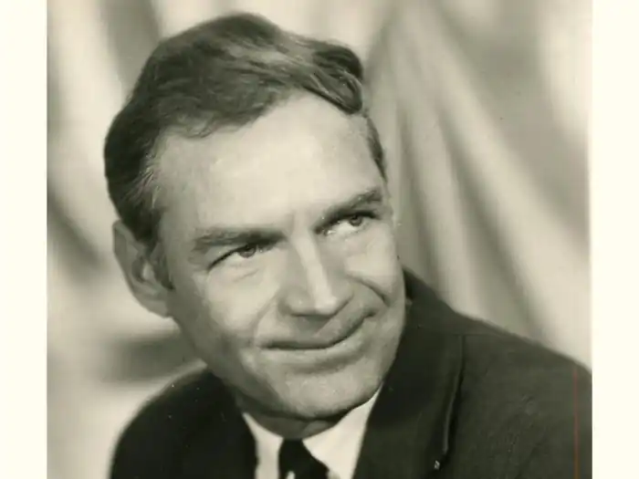
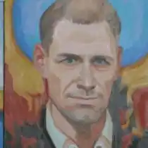
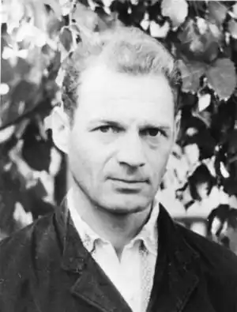
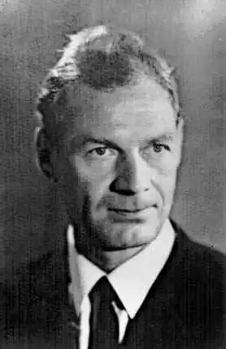
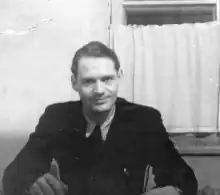

О. І. ТИХИЙ
(1932 — 1984)
Олексій Іванович Тихий народився 27 січня 1932 року на хуторі Їжівка біля міста Дружківка. Закінчив філософський факультет Московського університету, працював учителем, завучем. У 1956 році виступив з відкритою заявою проти окупації радянськими військами Угорщини, за що був засуджений несправедливим судом на 7 років таборів суворого режиму та 5 років позбавлення громадянський прав. Перебуваючи у концтаборах Мордовії, О. Тихий познайомився з багатьма активістами національно-визвольних змагань, зокрема з композитором Василем Барвінським, лікарем Б. Кортухом, якому допоміг скласти, а згодом і видати книгу "Ліки навколо нас". Про зустріч з Тихим відомий правозахисник Л. Лук'яненко згадував: "Уперше ми побачились з ним навесні 1961 року в мордовському концтаборі у селі Сосновка. У міцному потискові його руки, в усій його постаті і навіть у ході відчувалася якась урівноваженість його високої душі Він не нарікав на труднощі табірного життя. Немовби не помічав. Але так і не призвичаївся до несправедливості та знущань табірної адміністрації. Утім, присікування тюремників та вибіркові жорстокості сприймав звичайно з гумором, підбадьорював інших". Звільнившись у 1964 році, О. Тихий став працювати на цегельні. Згодом трохи вчителював, але душа не могла примиритись з роллю проповідника фальшивих істин. Заробляв на прожиття в основному фізичною працею, хоча мов два дипломи про вищу освіту. А тим часом підготував книгу висловлювань видатних людей світу про рідну мову "Мова народу — народ", написав статті "Думки про рідний донецький край", "Роздуми про долю української мови та культури в Донецькій області", "Вільний час трудящих". О. Тихий уклав словник мовних покручів Донеччини. Його перу належить низка публіцистичних праць з педагогіки. Судочинці, які поставили за мету знищити непокірного правдолюбця, дали таку свою політичну оцінку нарису "Думки про рідний донецький край": "Тихий зводить злісні наклепницькі вигадки, які порочать радянський державний і суспільний лад, національну політику КПРС і радянського уряду". Виявилося, що роздуми над питанням національного розвитку народу було для імперії найнебезпечнішим. Один з дослідників спадщини нашого земляка Сергій Пирогов зауважує: "…якби Тихий закликав до "повалення"... тощо, то з ним обійшлися б м'якше, покарали б легше... Мабуть, через свою простоту душевну, через природний український патріотизм Олексій Тихий зачепив, навмисне, не хотячи, найболючішу жилу". Ця жила — національне питання, і зачепив він свідомо розуміючи, що йому загрожує. Адже на цифрах показано було результати "мудрої" національної політики партії у сфері культури. Так, зокрема, Тихий виявив, що з 1200 шкіл Донеччини тільки сотня була з українською мовою викладання. Та й школи ті були в далеких селах і нараховували від 50-ти до 150-ти школярів, в той же час у міських і російських школах учнів нараховувалось від 500 до 2500. Це був фактично геноцид: цілеспрямована політика радянської держави на винищення української культури, українського народу. О. Тихому було пред'явлено ще одне звинувачення. Коли 1976 року організувалася Хельсінкська група (згодом Українська Хельсінкська Спілка), то серед її членів-засновників був і Олекса Тихий — учитель з Донеччини. А 4 лютого 1977 року його та письменника Миколу Руденка заарештували за звинуваченням у "зведенні наклепницьких вигадок, що паплюжать радянський державний та суспільний лад". У своїх спогадах Л. Лук'яненко свідчив, що у грудні 1979 року на 17-й день голодівки-протесту проти знущань охоронців концтабору, у Тихого прорвался шлунок. Перед операцією йому запропонували. написати заяву про відмову від своїх переконань, натякнувши, що від цього залежатимуть результати операції. Та в'язень відкинув торги зі своєю совістю навіть перед реальною загрозою смерті. Довгі роки перебування в ув'язненні, голодівки-протести виснажили здоров'я Олекси Тихого. 5 травня 1984 року він помер після чергової операції в концтаборі міста Пермі. Про останні дні його стражденного життя Василь Овсієнко, побратим Тихого по концтаборам, згадував: "Смертельні метастази вже наскрізь пронизували зболіле Олексине тіло, але з лиця не сходила доброзичлива посмішка, якою він осявав співрозмовника. Знеможений, він лягав на долівку, охоплював руками коліна і так затято, без стогону, терпів люті болі та лайку наглядачів, які вимагали працювати, "не порушуючи режим". За участю сина О. Тихого Володимира, його поховали на кладовищі "Сєвєрноє". Україна не забула свого сина. 19 листопада 1989 року Олексу Тихого разом з Василем Стусом та Юрієм Литвином було перепоховано на Байковому кладовищі в Києві. Залишене ним критичне слово не втрачає свого значення й досі: пекучі проблеми національного відродження залишаються злободенними і на початку ХХІ століття.